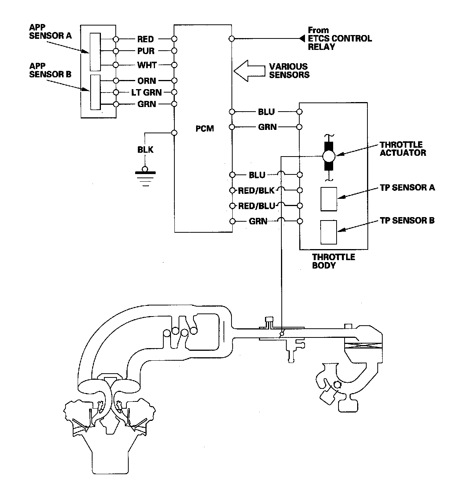

Electronic Throttle Control System
Electronic Throttle Control SystemThe throttle is electronically controlled by the electronic throttle control system. Refer to the system diagram to see a functional layout of the system.
Idle control: When the engine is idling, the PCM controls the throttle actuator to maintain the proper idle speed according to engine loads.
Acceleration control: When the accelerator pedal is pressed, the PCM opens the throttle valve depending on the accelerator pedal position (APP) sensor signal.
Cruise control: The PCM controls the throttle actuator to maintain the set speed when cruise control is operating. The throttle actuator takes the place of the cruise control actuator.

Electronic Throttle Control System Diagram
The electronic throttle control system consists of the throttle actuator, throttle position (TP) sensor A/B, accelerator pedal position (APP) sensor A/B, electronic throttle control system (ETCS) control relay, and the PCM.